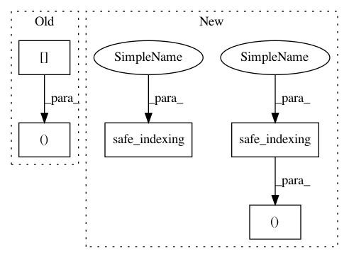

cddf39be59c3c1231d2d4fd3b9bfc10a21e63780,imblearn/under_sampling/prototype_generation/cluster_centroids.py,ClusterCentroids,_sample,#ClusterCentroids#Any#Any#,107
Before Change
self._validate_estimator()
X_resampled = np.empty((0, X.shape[1]), dtype=X.dtype)
y_resampled = np.empty((0, ), dtype=y.dtype)
for target_class in np.unique(y):
After Change
X_resampled = sparse.vstack([sparse.csr_matrix(X_resampled),
safe_indexing(X, idx_under)])
else:
X_resampled = np.vstack((X_resampled, safe_indexing(X, idx_under)))
y_resampled = np.hstack((y_resampled, safe_indexing(y, idx_under)))
return X_resampled, np.array(y_resampled)
In pattern: SUPERPATTERN
Frequency: 3
Non-data size: 5
Instances
Project Name: scikit-learn-contrib/imbalanced-learn
Commit Name: cddf39be59c3c1231d2d4fd3b9bfc10a21e63780
Time: 2017-08-24
Author: g.lemaitre58@gmail.com
File Name: imblearn/under_sampling/prototype_generation/cluster_centroids.py
Class Name: ClusterCentroids
Method Name: _sample
Project Name: scikit-learn-contrib/imbalanced-learn
Commit Name: cddf39be59c3c1231d2d4fd3b9bfc10a21e63780
Time: 2017-08-24
Author: g.lemaitre58@gmail.com
File Name: imblearn/under_sampling/prototype_generation/cluster_centroids.py
Class Name: ClusterCentroids
Method Name: _sample
Project Name: scikit-learn-contrib/imbalanced-learn
Commit Name: cddf39be59c3c1231d2d4fd3b9bfc10a21e63780
Time: 2017-08-24
Author: g.lemaitre58@gmail.com
File Name: imblearn/under_sampling/prototype_selection/tomek_links.py
Class Name: TomekLinks
Method Name: _sample
Project Name: scikit-learn-contrib/imbalanced-learn
Commit Name: cddf39be59c3c1231d2d4fd3b9bfc10a21e63780
Time: 2017-08-24
Author: g.lemaitre58@gmail.com
File Name: imblearn/under_sampling/prototype_selection/random_under_sampler.py
Class Name: RandomUnderSampler
Method Name: _sample